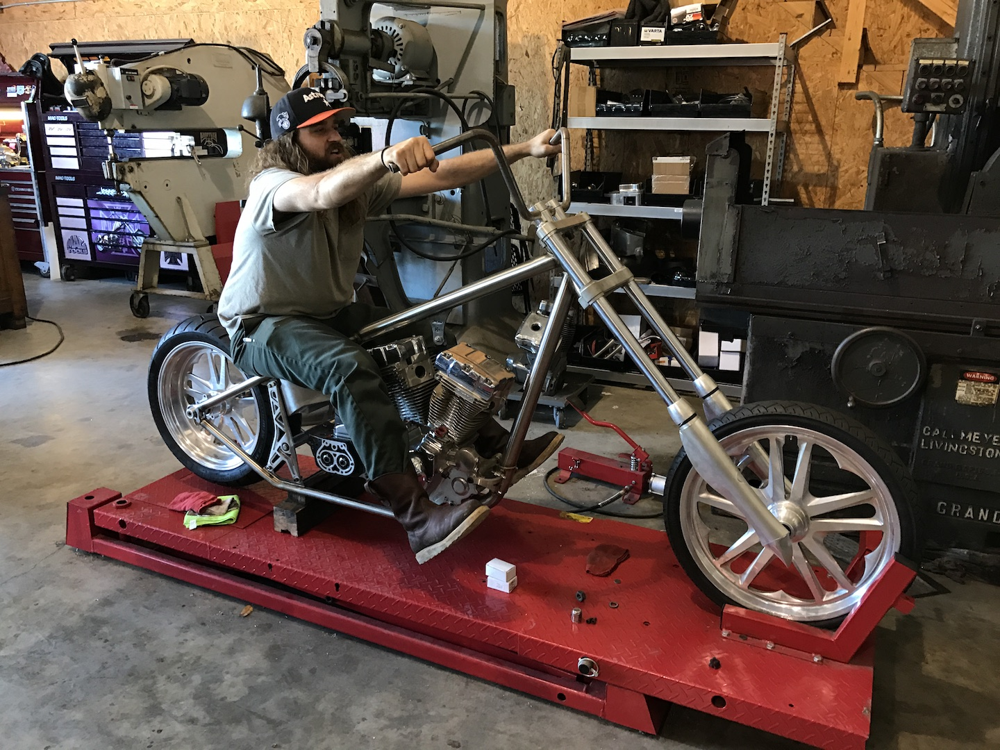

About Me
I've had alot of jobs in alot of different industries. In the eary days, I did inventory control for Apple Retail. That took me to Apple Care at the corporate office. Working on the phones is'nt as much fun as you would think it would be.
I got into the metal fabrication and machine shop industry. I worked for Jesse James, the bike builder from TV. We made hot rods, motorcycles, guns and knives. It was a pretty cool gig and unlike any place I'll ever work again. I learned a lot of things that I will take with me on the rest of my journey but I needed something more stable fanacially.
I am very excited to work toward becoming a web developer in the great city of Austin, TX.